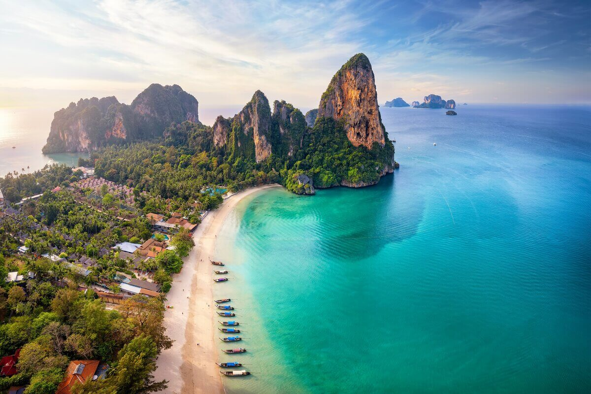

A Ásia é um continente que pulsa cultura, espiritualidade, sabores exóticos e paisagens surreais. É o tipo de lugar que desafia os sentidos, ensina o olhar e transforma o coração. Se você está pensando em desbravar esse pedaço fascinante do mundo, aqui vão 4 países asiáticos que prometem experiências inesquecíveis:
Japão
O Japão é onde o passado e o futuro convivem em perfeita harmonia. Templos milenares dividem espaço com arranha-céus e tecnologias de ponta. Você pode ver as cerejeiras florescendo em Kyoto pela manhã e comer sushi fresquinho no mercado de Tóquio à noite. É um país organizado, seguro, cheio de tradições e, ao mesmo tempo, surpreendentemente moderno. Um destino pra quem ama cultura, beleza e curiosidades.

Tailândia
Colorida, vibrante e deliciosa! A Tailândia é um clássico entre os viajantes e não é por acaso. As praias do sul são de tirar o fôlego (como Phi Phi e Railay), o norte encanta com templos e montanhas (alô, Chiang Mai!), e Bangkok é pura energia. Além disso, a culinária tailandesa é um show à parte — picante, aromática e cheia de personalidade.
Índia
Intensa, espiritual, caótica e profundamente encantadora. Viajar pela Índia é viver uma explosão de cores, cheiros, sons e sentimentos. Do Taj Mahal às margens do rio Ganges, dos sabores da culinária ao contato com tradições milenares — cada canto do país oferece uma nova perspectiva sobre o mundo e sobre si mesmo. Não é uma viagem comum, é uma jornada de transformação.
Vietnã
Um destino surpreendente e cada vez mais querido entre os viajantes. O Vietnã mistura paisagens naturais impressionantes (como a Baía de Ha Long), cidades históricas (Hoi An é um charme!) e uma gastronomia que conquista com cada garfada. Além disso, é um país acessível, perfeito para quem quer explorar sem gastar muito. Cultura rica, povo acolhedor e muita história viva nas ruas.